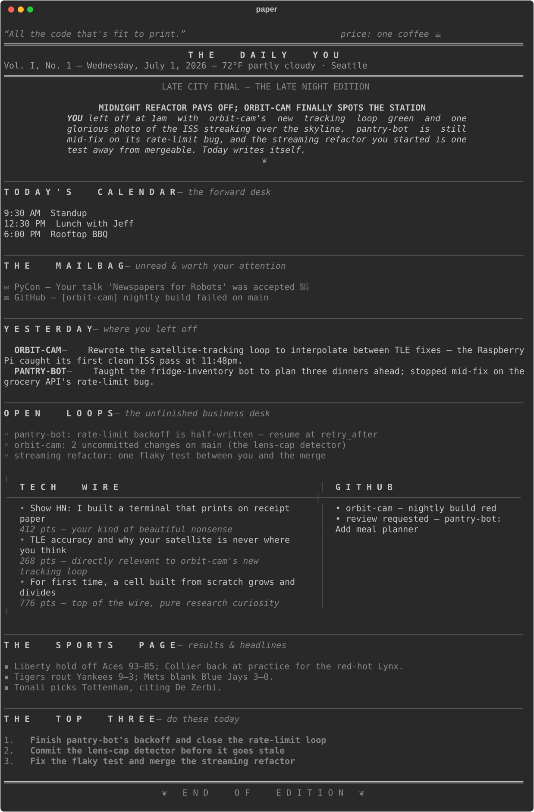
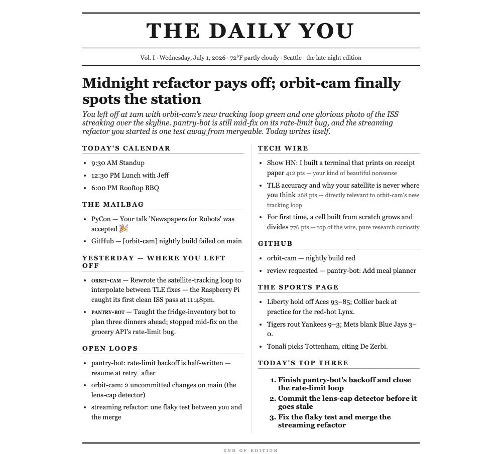

Your Terminal Prints
a Newspaper Now
— it knows where you left off, so you never spend the first twenty minutes finding out —
Your coding agents already keep a perfect record of your work — nobody reads it. paper does: it journals your Claude Code and Codex sessions and your git history, adds your inbox, calendar, and the morning wire, and an AI editorial desk prints you a daily edition about your own life.
HOW TO SUBSCRIBE
git clone github.com/sayantan94/newspaper
cd newspaper && uv tool install --editable .
paper
✦ ✦ ✦

paper pdf typesets the day for actual paper.